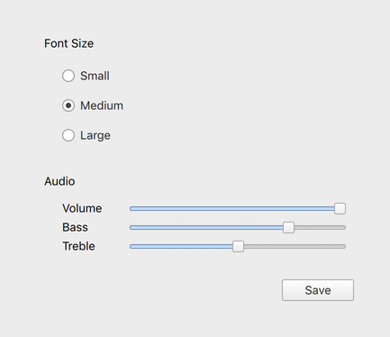
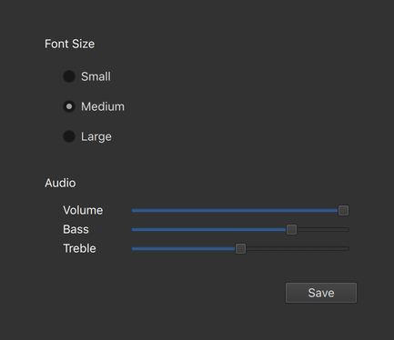
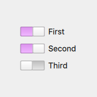

Fusion Style
The Fusion style is a desktop-oriented style.
The Fusion style is a platform-agnostic style that offers a desktop-oriented look and feel. It implements the same design language as the Fusion style for Qt Widgets.
 The light theme of the Fusion style. |  The dark theme of the Fusion style. |
To run an application with the Fusion style, see Using Styles in Qt Quick Controls.
Note: The Fusion style is not a native desktop style. The style runs on any platform, and looks similar everywhere. Minor differences may occur due to differences in the standard system palettes, available fonts, and font rendering engines.
Customization
The Fusion style uses the standard system Palette to provide colors that match the desktop environment.

Custom palettes can be specified for any control, popup, or application window. Explicit palette attributes are automatically propagated from parent to children, overriding any system defaults for that attribute. In the following example, the window and all three switches appear with a violet highlight color:
import QtQuick 2.12 import QtQuick.Controls 2.12 ApplicationWindow { visible: true palette.highlight: "violet" Column { anchors.centerIn: parent Switch { text: qsTr("First"); checked: true } Switch { text: qsTr("Second"); checked: true } Switch { text: qsTr("Third") } } } |  |
See also Basic Style, Material Style, Universal Style